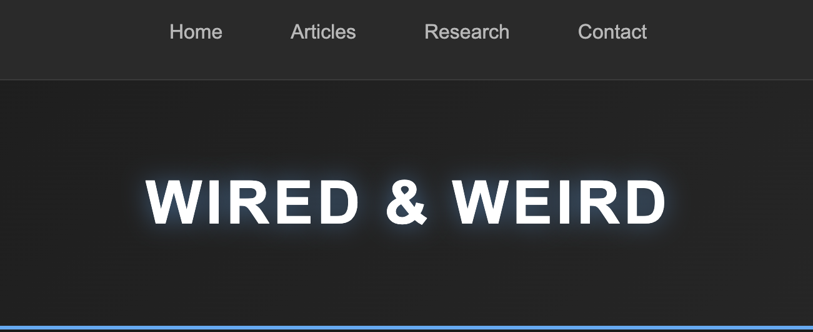
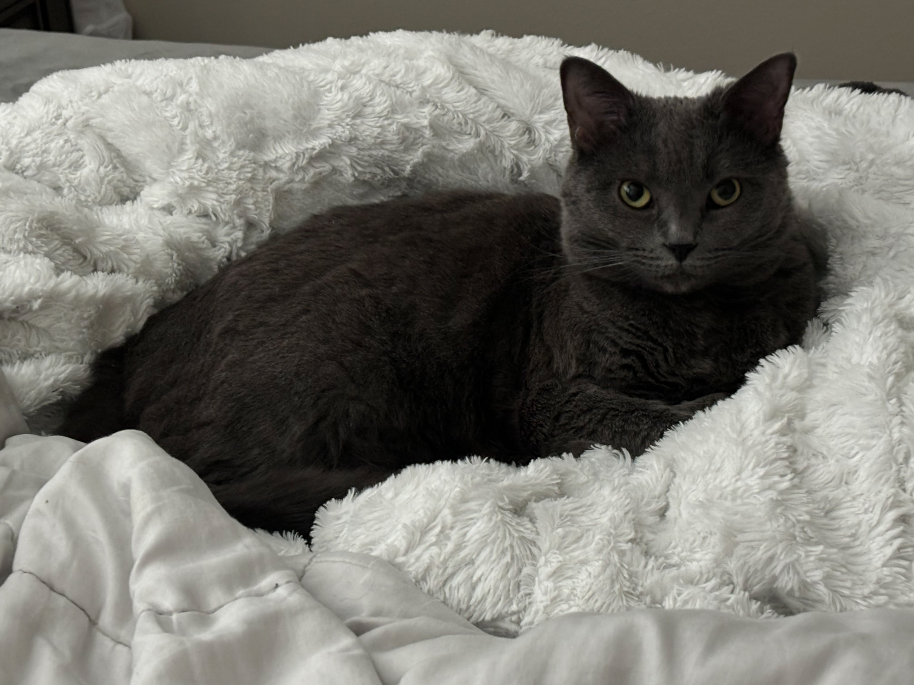

My Projects

Sunny Side
A code along project for a multi-paged consumer site with modern design and responsive layouts.
View Project

Applying Article Styles
A mock site to showcase potential blogs and article styles with stylish typography and layout.
View Project

Pet Quest
A mock pet fostering site that lets visitors explore pets and interact using simple forms and buttons.
View Project